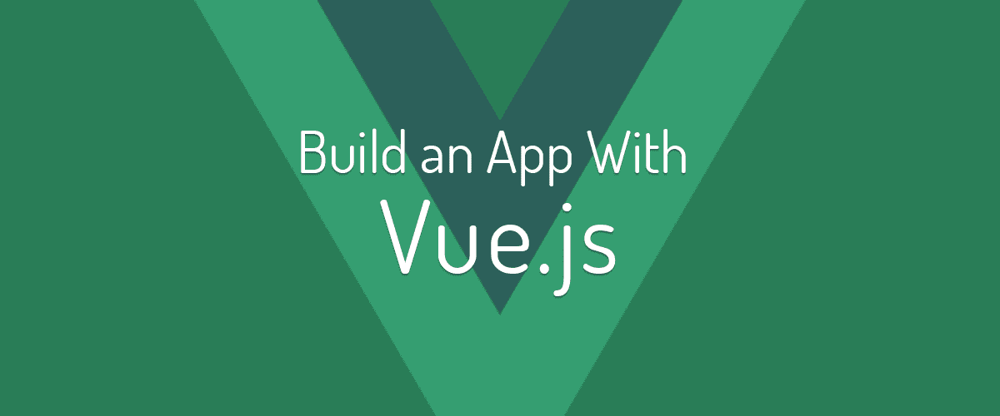
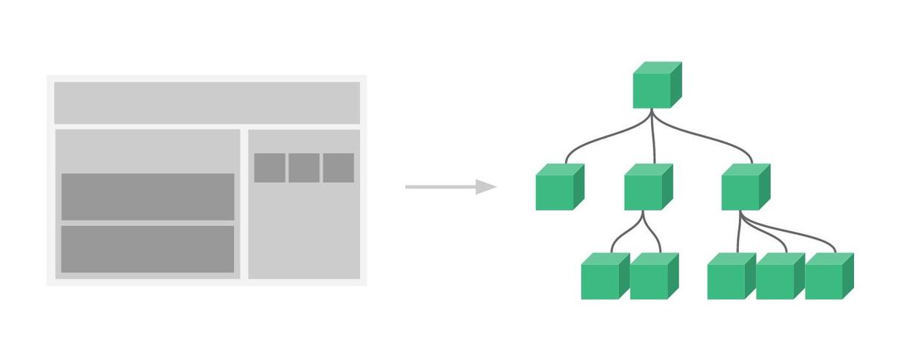
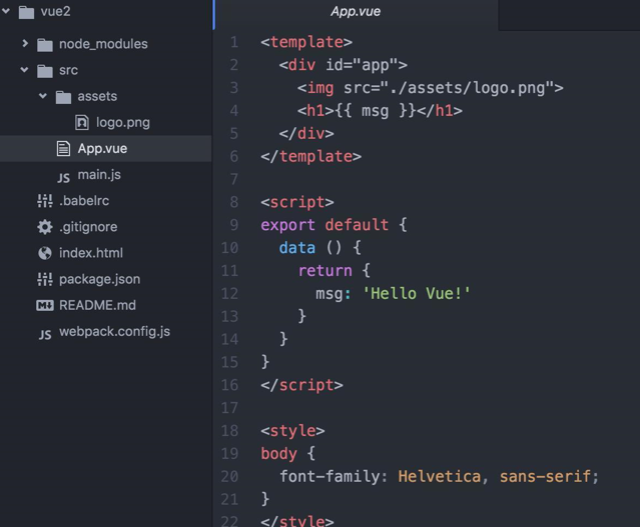

本人也是前端小白一枚，就职于北京，目前还是一个实习生，之所以写博客，是为了把自己会的东西分享出来，通过这篇博客的学习，希望带给你的是，从原来一点都不懂，变成好像会一点东西了，有vue基础的大佬们，绕行吧！！开始吹了，随着时代的发展，社会的进步，不得不承认，vue框架已经成为当今社会的主流框架，其根本原因在于，它真的特别好用，当你质疑它的时候，请反问自己一句，你真能还能找到比他更好用的框架么？？更多时候，我觉得vue仿佛就是react和anglar的一个结合，强大的vue-cli脚手架，可以让你轻松的使用webpack，vue-router以及vueX，还有什么功能能难倒它么，开始介绍吧！！

vue的介绍
起源和由来不说了，感兴趣的话自己百度看把，直接进入正题，其实在我们使用vue的过程中，主要有两种使用方式，一种是通过引用vue。js的方式进行开发，就好像是引入jquery那种，还有一种就是用vue-cli脚手架的形式进行开发，两者我更喜欢第二个，但是新手初学者，还是建议从第一种入手，而我这里的讲解，也主要是讲解第二种，先说一下和jquery的区别把，用过jq的同学可能知道，这套框架给人带来的好处就是 1.他解决了我们的兼容性问题 ，2他可能让我们更容易的去操作dom元素，而vue是不推荐我们直接操作dom的，为什么呢？因为他内部实际上是封装了一个虚拟的dmo树，所有的语法和方法，都是在dom树上进行的，通过订阅者和观察者的模式和方法，完成的各种事件的绑定和监听，我个人觉得，vue的强大的原因 1.组件化，2绑定事件比较容易，3强大的生命周期vue-cli的安装:
需要安装node以及npm，然后在npm install vue-cli -g就可以了，怎么样？？简单吧！组件化:
组件化是什么？？没用合作开发项目的同学，可能对这个概念比较模糊，我就来介绍一下把，其实是这样的，一般中型项目，或者大型项目都是由合作开发的，用人类的语言来讲，就是一人负责一个模块，然后整和再一起，之前有学过amd和cmd的伙伴应该比较清楚，我最开始了解模块就是在这个时候，就是把没一个部分，独立出来，然后通过引用或者组件的形式引入进来，就OK了。而我们使用vue的好处就是他已经帮我们最好了这些处理，并且也支持import和require的语法，进行模块开发，就像下面的图片一样，把整个项目，分成一个小块，然后再叠加起来，方便我们修改代码，复用代码，以及后期的维护 手写hello vue:
当你安装完成，新建vue项目的时候，你会发现，怎么这么多文件夹，这都是什么。。。但其实真正接触的，也就那几个，blude是配置vue-cli的，index.js 是项目的根文件，main是入口文件（模块堆起来了，总要有个文件显示把），再就是src文件了，我们平时的操作，百分之80都再这个文件夹，如下图，app.vue就是我们的项目，tempalte那个是什么，里面的东西怎么看着这么眼熟??没错，这就是我们写html的部分的地方，但是记住，tempalte中最高层级的父级只能有一个，srcipt就是我们写js的地方，记住啊，我们所有的操作都要在data中进行，这样，才能通过export暴露出去，让别的文件调用，其实不单单只有一个return，还有method，complates，compulted，watch等等方法，以及强大的生命周期，等等就不一一介绍了！！！ 组件组件
组件就是我们前面说到的，一个个小模块，在工程目录/src下创建component文件夹，并在component文件夹下创建一个 firstcomponent.vue并写仿照 App.vue 的格式和前面学到的知识写一个组件。 第一步，引入。在标签内的第一行写:import firstcomponent from './component/firstcomponent.vue'第二步，注册。在script标签内的 data 代码块后面加上 components: { firstcomponent }。记得中间加英文逗号!!!第三步，使用。 在"template内加上firstcomponent".!!vue资料推荐
1.官网讲的其实真的很不错，通俗易懂的人类的语言让你读起来真的很舒服-->vue官网
2.ele的vue组件库：http://element.eleme.io/#/
3.其实网上还有一个原生仿饿了么的视频，讲的也是美滋滋，我的当时是在淘宝上买的，几元钱，但是，不是高清的，后面的画面太差了，就没看下去.
博客文章推荐
我个人比较喜欢张鑫旭，看过他的博客，感觉就好像看小说一样，写的文章没那么枯燥。重点是，有内涵！！！

张鑫旭的首页地址：http://www.zhangxinxu.com/
张鑫旭的启蒙博客，哈哈：http://www.zhangxinxu.com/wordpress/2012/09/css3-3d-transform-perspective-animate-transition/